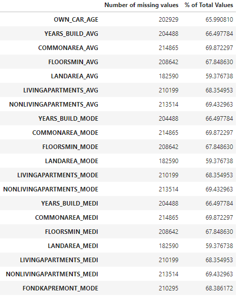
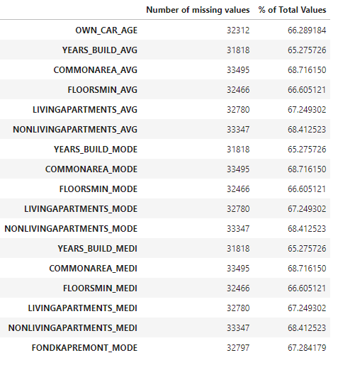

Data exploration
The data exploration was done in a notebook found at notebooks/1.0-TD-data-exploration.ipynb
After loading the dataset and doing a quick overview of what is in it, we decided to first take a look at the Target feature.
Target feature analysis
We can see that they are a lot more negative target (value of 0, which mean that the applicant haven’t been able to repay the loan) than positive target (value of 1, the opposite)
After that we decided to prepare the data processing by looking at the missing values :
Missing values overview
To see the values that were missing, we created a small python program that would count the missing values for each columns and displays them as a percentage in a pandas dataframe
def missing_values_table(df):
missing = df.isnull().sum()
percent = 100 * df.isnull().sum() / len(df)
table = pd.concat([missing, percent], axis=1)
table_rename = table.rename(columns = {0: 'Number of missing values',1: '% of Total Values'})
return table_rename[table_rename['Number of missing values'] > 0]
Here is what we got in decreasing order for the training set and the testing set :
 {kind=link}
{kind=link}
Unique values overview
To prepare feature engineering, we needed some insight on the unique values for each columns so we created this python code.
def unique_df(df):
number_unique = []
for column in df.columns:
number_unique.append(df[column].nunique())
df_unique = pd.DataFrame(zip(df.columns, number_unique, [str(dtype) for dtype in df.dtypes]),
columns = ["Column name", "Nbr of Unique Values", "Data Type"])
return df_unique
This code count the unique values and data type for each column, we will be using it to aim our feature engineering.
Correlations
We also tried to see the columns that were strongly correlated with the target feature with pandas’ .corr() function.